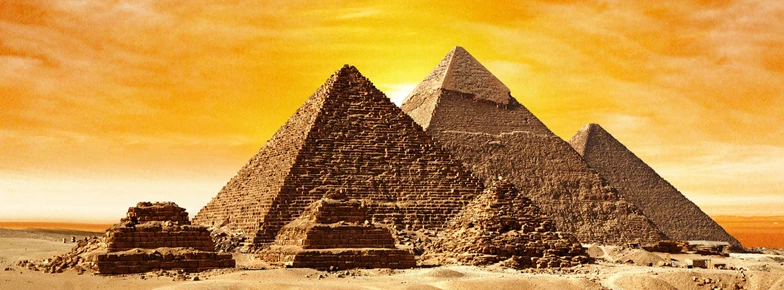

Egyptské pyramidy jsou fascinující stavby, které lidé stavěli před tisíci lety ve starověkém Egyptě. Byly nejen obrovské a impozantní, ale měly i velmi důležitý účel. Sloužily jako hrobky pro egyptské krále, královny a další významné osobnosti. Každá pyramida byla součástí velkého komplexu budov, který zahrnoval údolní chrám, vzestupnou cestu, zádušní chrám a někdy i malé pyramidy pro manželky faraonů. Tyto stavby měly pomoci králi v jeho cestě do posmrtného života a zajišťovaly, že jeho duch bude mít všechno potřebné pro věčný život.
Nejznámější pyramidy se nacházejí v oblasti Gízy. Tři hlavní pyramidy – Chufuova, Rachefova a Menkaureova – jsou známé po celém světě. Chufuova pyramida, která je také nazývána Velká pyramida, je největší a nejvyšší ze všech pyramid. V minulosti byla obložena bílým vápencem, takže se krásně leskla na slunci.
Jejich stavba byla velice složitá a vyžadovala velké množství práce a dovedností. Vědci se domnívají, že stavitelé velké bloky kamene možná přiváželi pomocí dřevěných kladek a ramp. Chufuova Velká pyramida se skládá z milionů těchto kamenů, které byly přesně opracovány, aby perfektně seděly na svých místech. Celý proces stavby trval roky a zapojilo se do něj mnoho lidí.